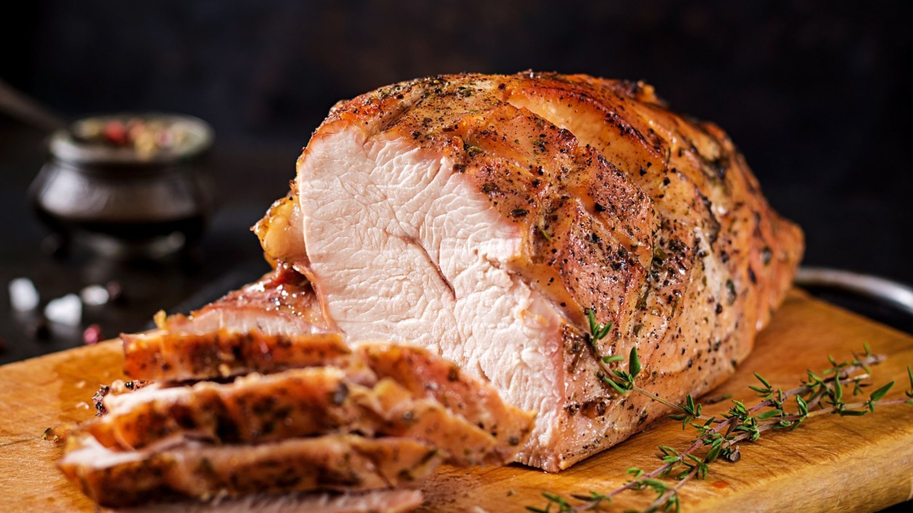
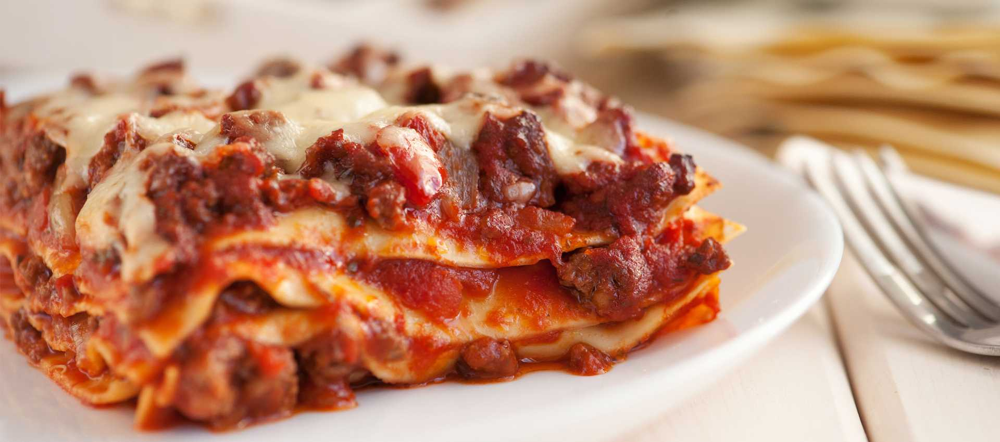

Vetrina

Arrosto di Maiale alle Erbe
20,00 €/kg
Fetta di arrosto cotto lentamente con rosmarino, salvia e aglio; carne succosa e succulenta, accompagnamento consigliato: patate al forno.

Insalata di Mare Mediterranea
22,00 €/kg
Mix di calamari, gamberi e polpo con olive taggiasche, pomodorini e un filo d’olio extravergine. Leggera, profumata e pronta da gustare.

Lasagnetta al Ragù
14,00 €/kg
Porzione singola di lasagna fatta in casa con sfoglia fresca, ragù di carne lento e besciamella vellutata. Sapore tradizionale, porzione generosa.

Polpettone della Nonna
18,00 €/kg
Un classico casalingo: carne selezionata, pangrattato aromatizzato e un ripieno morbido di formaggio filante. Perfetto caldo o freddo per un pranzo in famiglia.

Tortino di Verdure e Formaggio
16,00 €/kg
Tortino vegetariano con zucchine, melanzane, peperoni e una croccante crosta dorata. Ideale come antipasto o pranzo leggero.